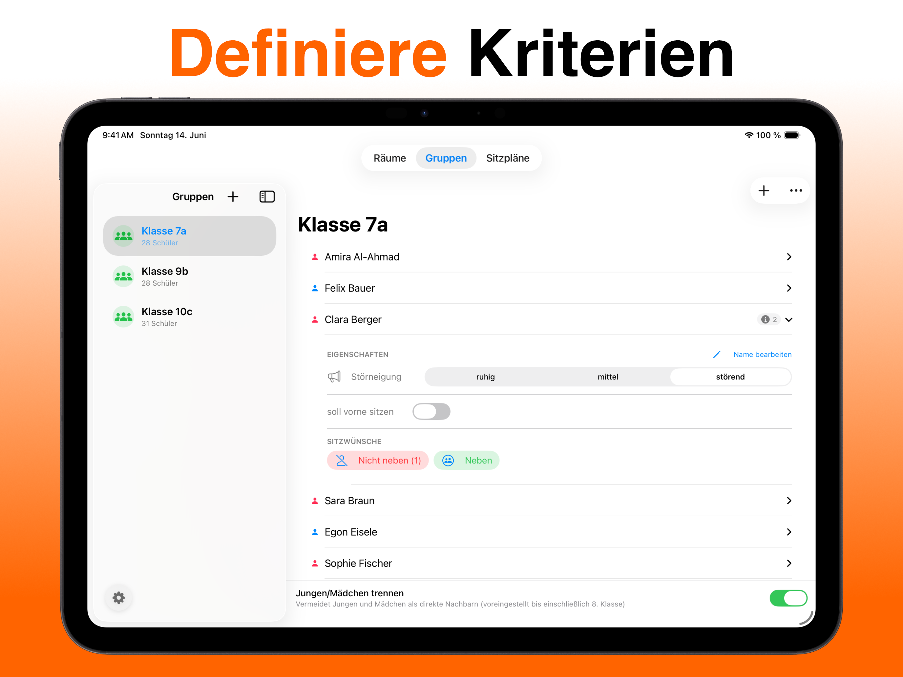
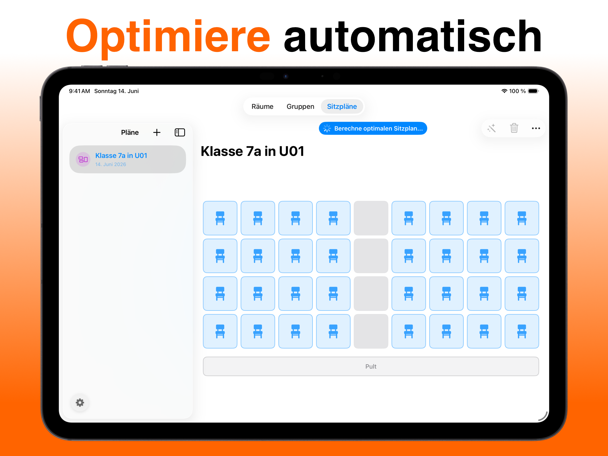
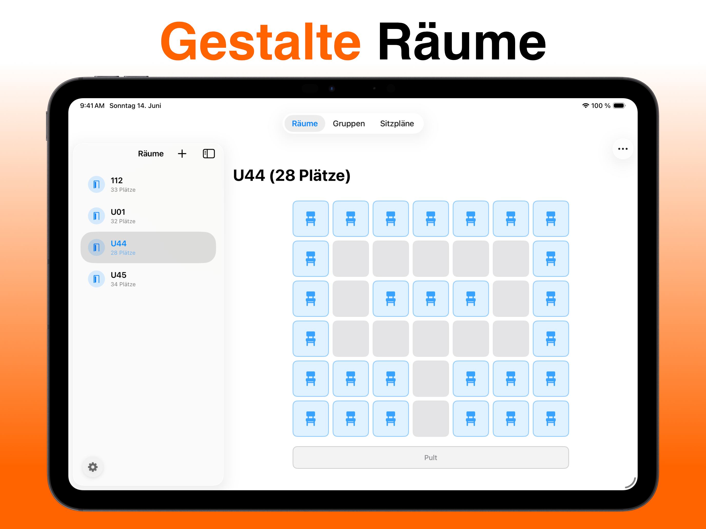
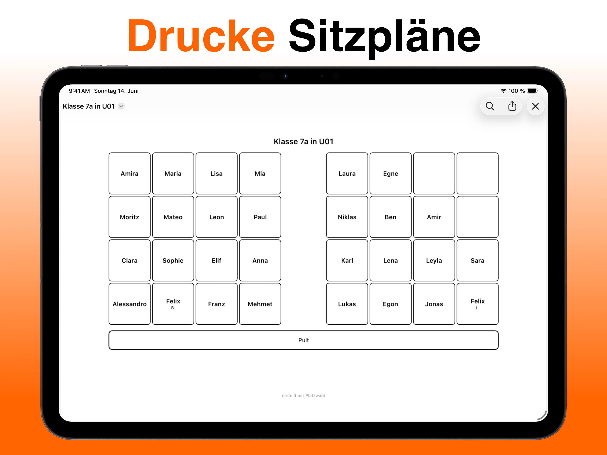

Platzwahl
Sitzpläne für Lehrkräfte, automatisch und fair verteilt.






Alles, was ein guter Sitzplan braucht.
Sitzplan auf Knopfdruck
Ein Tippen verteilt die ganze Klasse fair und nach deinen Regeln.
Dein Raum, exakt
Reihen, U-Form oder Gruppentische: Jeder Klassenraum lässt sich nachbauen.
Regeln pro Kind
Störneigung, Wunschnachbarn und Plätze vorne fließen in die Berechnung ein.
Nachvollziehbarer Score
Ein Score zeigt, wie gut der Plan ist, und erklärt jede Abweichung.
Klasse aus Excel
CSV importieren, und die ganze Klasse ist in Sekunden angelegt.
Druckfertiges PDF
Jeder Plan lässt sich als PDF exportieren und ausdrucken.
In vier Schritten zum Plan.
Raum nachbauen
Sitze antippen oder ganze Bereiche mit dem Finger malen.
Klasse anlegen
Namen eintragen oder per CSV importieren, Regeln setzen.
„Optimal“ tippen
Der Algorithmus findet den bestmöglichen Plan.
Drucken
Als PDF exportieren. Neuer Plan? Ein Tippen genügt.
Zum Weiterlesen
- Sitzplan erstellenIn 5 Minuten zum fertigen Plan.
- Sitzplan-GeneratorWarum Zufall nicht reicht.
- Sitzordnung im KlassenzimmerReihen, U-Form, Gruppentische.
- Sitzplan GrundschuleWas in Klasse 1–4 zählt.
- Sitzplan-App für iPadApp statt Excel, mit Blick auf den Datenschutz.
- Classroom ManagementSitzplan, Gruppen und Lautstärke.
Häufige Fragen
Für wen ist Platzwahl gedacht?
Für Lehrkräfte aller Schularten, die Sitzpläne schnell und fair erstellen möchten — ohne stundenlanges Hin-und-her-Schieben oder Tabellen-Gefummel.
Wie erstellt Platzwahl automatisch einen Sitzplan?
Die App verteilt Schülerinnen und Schüler anhand individueller Regeln — Störneigung, Sitzwünsche, Jungen/Mädchen-Trennung — optimal auf die verfügbaren Plätze. Ein Score zeigt auf einen Blick, wie gut der Plan ist und welche Regeln noch verletzt werden.
Werden Schülerdaten gespeichert oder übertragen?
Nein. Alle eingetragenen Namen und Regeln bleiben ausschließlich lokal auf deinem Gerät. Es findet keine Übertragung an externe Server statt — weder von uns noch von Drittanbietern.
Kann ich mehrere Klassen und Räume verwalten?
Ja. Du kannst beliebig viele Räume und Klassen anlegen und jeweils eigene Sitzpläne erstellen. Alles bleibt gespeichert.
Gibt es einen PDF-Export?
Ja. Jeder Sitzplan lässt sich direkt als PDF exportieren — sauber, ohne Aufwand, sofort druckfertig.
Ist die Sitzplan App kostenlos?
Ja. Platzwahl ist kostenlos im App Store erhältlich. Platzwahl Pro schaltet optional unbegrenzt viele Räume, Gruppen und Sitzpläne frei.
Kann ich eine ganze Klasse aus Excel importieren?
Ja. Exportiere die Klassenliste als CSV-Datei aus Excel oder Google Sheets und importiere sie direkt in Platzwahl — die ganze Klasse ist in Sekunden angelegt.